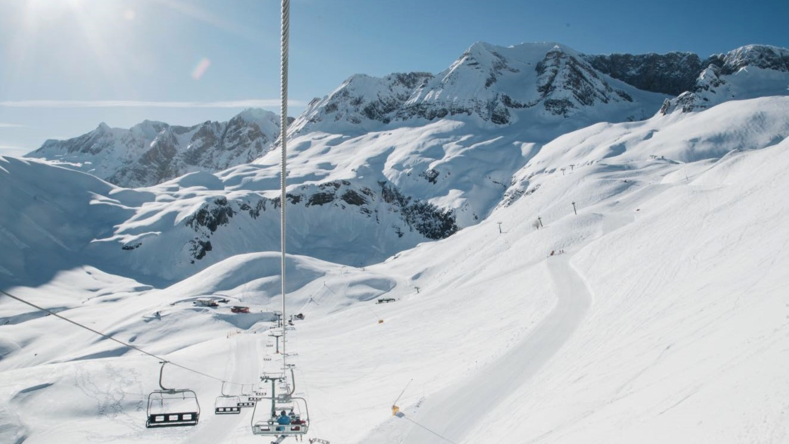
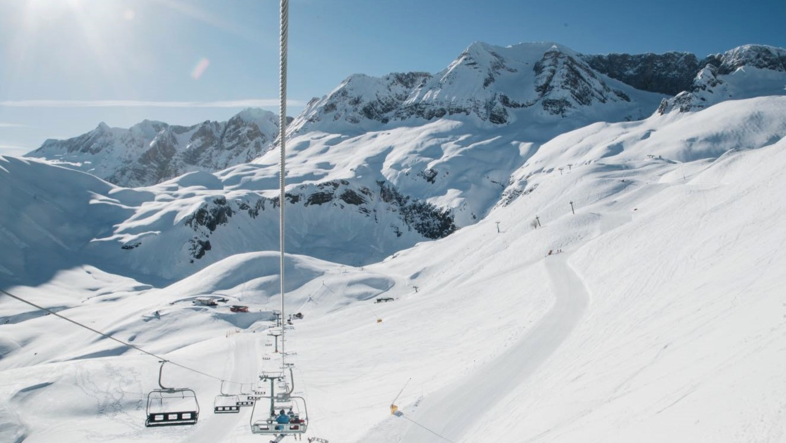

INFORMACIÓN DE LA ESTACIÓN
Contamos con 9,1 km de dominio esquiable, distribuidos entre 13 pistas con distintos niveles, para todos los públicos. Además nuestras instalaciones te harán disfrutar del tiempo de ocio y con nuestras actividades organizadas todo el mundo estará ocupado. Descubrirás una nueva manera de disfrutar de la nieve.
Contamos con 9,1 km de dominio esquiable, distribuidos entre 13 pistas con distintos niveles, para todos los públicos. Además nuestras instalaciones te harán disfrutar del tiempo de ocio y con nuestras actividades organizadas todo el mundo estará ocupado. Descubrirás una nueva manera de disfrutar de la nieve.
 
